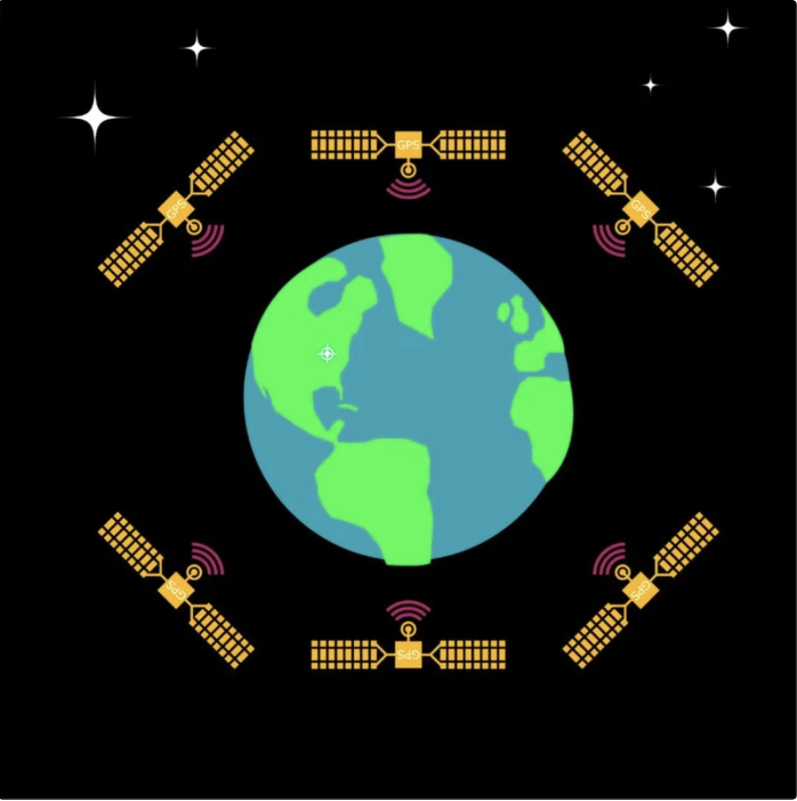

Overview
GPS stands for Global Positioning System and the roots of this system go back to the Cold War. The system is a network of about 30 satellites orbiting the Earth at an altitude of 20,000 km and was developed by the US military to provide strategic advantage for precisely guiding their Intercontinental Ballistic Missiles towards their targets. A degraded precision GPS was released to the public in the 90s and the accuracy afforded by the satellites was released to the public in the year 2000.
Anywhere on Earth, three satellites of the GPS network are visible at any given time. Each of these satellites transmits information via radio signals about its current location & time, at regular intervals. A GPS receiver can intercept these radio signals and based on how long it takes for the information to arrive, it can approximate the location of each satellite. With information of at least 3 satellites, the GPS receiver can pinpoint its exact location using a process called Trilateration.
Problem Statement
SFU Rocketry needed a reliable navigation system for their rocket that could:
- Provide real-time location tracking during flight
- Parse GPS data efficiently on embedded hardware
- Handle NMEA protocol communication
- Integrate with existing flight control systems
- Provide accurate position data for recovery operations
Solution
Implemented a complete GPS interface system using TM4C123GH6PM microcontroller and Adafruit GPS module that provides:
- UART Communication: Reliable serial communication with GPS module
- NMEA Parsing: Efficient parsing of GPS data strings
- Real-time Processing: Continuous location updates
- Error Handling: Robust error detection and recovery
- Data Logging: Flight path recording for analysis
Technical Implementation
Hardware Setup
The system consists of:
- TM4C123GH6PM LaunchPad microcontroller
- Adafruit Ultimate GPS Breakout module
- UART communication interface
- External antenna for improved signal reception
Software Architecture
The GPS interface was implemented in C with the following key components:
- UART Driver: Low-level serial communication
- NMEA Parser: GPS data string processing
- Data Structures: Efficient storage of GPS information
- Interrupt Handling: Real-time data reception
NMEA Protocol Implementation
The system parses standard NMEA sentences including:
- $GPGGA: Global positioning system fix data
- $GPRMC: Recommended minimum specific GPS data
- $GPGSV: GPS satellites in view
- $GPGSA: GPS DOP and active satellites
Results & Impact
The GPS interface system successfully achieved:
- Accuracy: ±3 meters position accuracy
- Update Rate: 1Hz location updates
- Reliability: 99% successful data parsing
- Integration: Seamless integration with rocket avionics
The system was successfully deployed on SFU Rocketry's rocket and provided accurate tracking during test flights and recovery operations.
Lessons Learned
This project provided valuable insights into:
- Serial Communication: UART protocol implementation and optimization
- Protocol Parsing: Efficient string processing for embedded systems
- GPS Technology: Understanding satellite navigation principles
- Aerospace Integration: Requirements for flight hardware